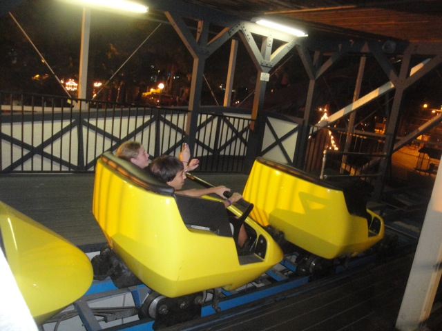

| |

Scandia Screamer Review

For today's review, we are heading back in time to review the Scandia Screamer. Now for most people, this looked like a big credit whoring coaster. Nothing looked special about it. But looks can be deciving. Find out for yourselves. Hop in the car, buckle the seatbelt, pull down your lap bar and let me show you just how crazy this ride really got. After rolling around a turn, we went up the lifthill. The lifthill was nothing special. There's not much to see, though if you do looked straight down, you will be able to see just how much there was to the ride. But anyways, fast foreword to the top of the lift hill. We slowly went around the turn. Just waiting to drop. We crawled towards it, and then we dropped. HOLY CRAP!!!! Are we supposed to be gaining this much speed? SLOW DOWN!!! SLOW DOWN!!!! THIS SHOULDN'T GO THIS FAST!!!!! We then roared up a big hill. A lot of our speed is gone. But we know just what this ride was capable of, and now suddenly, this seemed a little too flimsy to do what it wass doing. We rolled around the turn, and now we saw another big drop. WHAM!!!! We gained a lot more speed before rising up another big hill under the main first drop. So far, it was pretty good. Nothing insane, but good. After going around a turn under the main turn before the first drop, we once again went down another big drop before rising up again for another turn under the next section. Ok, now it started to get a little repetitive. But don't worry. It wass getting even crazier. The turns were starting to gain some laterals and now we were going down a small drop which gave us some great airtime. We then went through a tiny bunny hop that ejected us from our seats and actually dropped us down towards the ground, giving us even more speed. We then rose up, went through a sharp turn, which indeed gave us more laterals. We exchanged those laterals for more airtime as we dipped back down, getting thrown out of our seats. As we went through the bunny hop and got ejected, we wonder if the ride was intended to be this crazy or if it just failed as a family coaster and gave us crazy folks a reason to smile. Either way, HOORAY FOR INSANITY!!!!!! =) Just because we're crazy now doesn't mean it's at its peak. Its about to get even wilder. We got some seriously wicked laterals around the turn and dip down again. Now we do go through another bunny hop. But this one had a trim brake on it. Yeah, I can't really blame them for adding a trim. It needed it. We then rose up a little hill and SLAMMED into a final turn. And I mean SLAM!!!! These laterals are double that of a Wild Mouse. It was insane. After that insanity, we glide through some straight track into the brake run. Holy Crap! Was that supposed to be a family ride because its just absolutely insane. The entire ride is on crack. And I loved it for that. It's for reasons like this that I ranked it the 3rd Most Underrated Coaster ever. It was just absolutely insane. I know the ride is currently for sale. For gods sake! Someone please buy this ride! ANY PLACE!!! I WILL VISIT YOU AND GIVE A SH*T ABOUT YOU IF YOU BUY THE SCANDIA SCREAMER!!!
7/10
Location: Scandia
Opened: 1995
Died: 2019
Built by: Miler Coasters
Last Ridden: November 18, 2018
Scandia Screamer Photos





Home
|